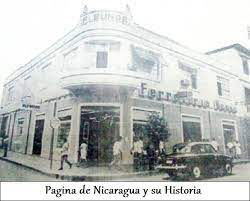
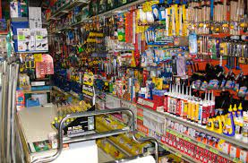
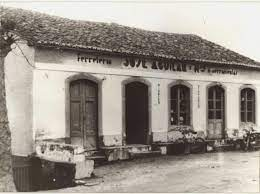

.png)
.jpg)
Nuestra historia
La historia detrás de las ferreterías es también la de negocios familiares que tuvieron que ir evolucionando conforme se presentaban avances en la humanidad. Así, cuando la corriente eléctrica formó parte de la vida cotidiana de las personas durante el siglo XIX, tuvieron que introducirse a estos negocios herramientas para reparar circuitos y tableros eléctricos domésticos. De esta manera, se establecieron poco a poco las ferreterías como tiendas pequeñas de abastecimiento cercanas a las personas. Gracias a ellas se erigieron casas, iglesias y demás obras arquitectónicas que podemos disfrutar alrededor del mundo. No hay una edificación grande o pequeña en la que no se haya visto involucrado el sector ferretero. Una evolución posterior hizo que las tiendas del ramo ferretero se dividieran por bloques y se dedicaran a vender materiales de un sector en específico. Gracias a esta diversificación se hicieron populares pequeñas tiendas de ventas de producto de jardinería, las que se dedican a la venta de cadenas, acoplamientos y ganchos, las que se especializan en tubos y varillas de diferentes materiales y tamaños, las que se dedican a herramientas eléctricas y metálicas, entre otras. La división en ramos dio paso a la nueva generación de ferreterías de bricolaje, que son comercios enormes que engloban todas las especialidades del ramo. Ahora es muy fácil recorrer cientos de metros cuadrados de una misma tienda con un catálogo y variedad de productos tan enorme que se valen de carteles y señalizaciones para que sus clientes no se pierdan en las instalaciones. Sin embargo, este avance también supuso un retroceso en cuanto un aspecto que es esencial en este tipo de negocios: el trato personalizado con el cliente. Quizá la comercialización a nivel industrial para estas tiendas nunca supuso un problema, ya que en ese ámbito se manejan con clientes que cuentan con conocimiento en la materia. Pese a lo anterior, la verdad es que el resto de los mortales sabe muy poco sobre el ramo y, debido al alto costo de la mano de obra, son muchos los que se vuelcan a la aventura de llevar a cabo sus propios proyectos en casa. Estos clientes necesitan asesoría y en una tienda de proporciones gigantescas ese contacto se diluye entre los interminables pasillos y estanterías, lo que sigue suponiendo una ventaja competitiva para los pequeños emprendimientos ferreteros. En la historia detrás de las ferreterías el pasado es importante, pero en el presente, encontrándonos en la era digital, estas tiendan han vuelto a evolucionar y es posible realizar las compras a través de páginas web. Las primeras aparecieron en la década de los noventa y en la actualidad la mayoría ofrece video tutoriales para atraer a los pequeños clientes amantes del bricolaje.


